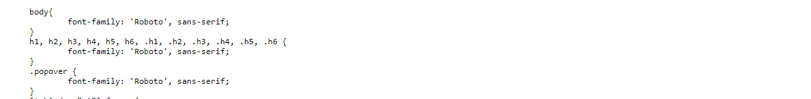
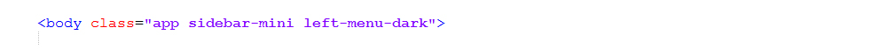
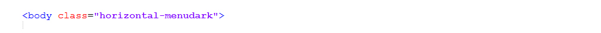
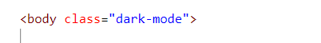

Sparic is a responsive HTML based Laravel template, With these template formats,
it's very easy to
create
a presence and grab someone's attention around the web page
because the template is built using HTML5, CSS3, Bootstrap 4 framework and with
Sass.
So
please before you start working with the template take a quick look on the
documentation.
So that you can easily built your website.
If You Love Our Template Design Please don't forget to rate it. Thank you so much! 😊
Thank you for purchasing our admin template. Feel free to contact us any time. We have a best dedicated team to provide you the best support. If you have any queries please contact us through live chat or email:- sprukotechnologies@gmail.com
Sparic - Laravel Admin & Dashboard Template. It includes 100+ PHP Pages, 60+ Plugins, UI elements and different Styles of Widgets etc. This template is “User Friendly” and it is designed in such a way that you can easily understand the code and can modify the template. The template contains advanced Form-Elements like Date pickers, Select2, Multi Select etc. This template is 100% Premium Admin Templates. This template is designed using Bootstrap 4 framework, HTML5, CSS3, Jquery.
It has clean, flat user interface design, easily customizable components and widgets. The Template comes with an unique design also we ensure you that you can easily design your admin template.
It’s fully responsive layout for all types of devices. It work’s on all major web browsers, Desktop, iPhone, iPad, Tablet and all other smart devices.
Once you Purchase the Sparic - Laravel Admin & Dashboard Template you’ll be getting all the HTML5, CSS3, SCSS & JS files and you are enabled to get free downloads of all the future updates.
Note: The clear documentation of PDF is given on How To Run Laravel Project In Localhost - For Beginners. Please Check out the PDF before running the project.
Step1: Please visit the Official Web Site of the Composer www.getcomposer.org
Step2: Click on the Download option
Step3: Click on the Composer-Setup.exe you are done with download
Step4: Now Right click on the Composer-Setup.exe file and select Run as administrator click on Yes
Step5: You'll be getting two options click as per your choice
Step6: I choose Recommended option here and if your developer you can check the box of the Developer Mode
Step7: And click on the Next button please make sure of installation path and then click Next
Step8: You'll be asked to enter proxy url please skip the step and click on the Next button
Step9: Please make sure with the PHP Version it should not be less than 7.3v, here we used 7.4.12 Version and then click on the next button
Step10: To confirm that Composer is installed in your system then type Composer in command prompt (if you are using XAMPP then go to C:\xampp\htdocs location and type composer)
Note : This installation is shown based on XAMPP server..
C:\xampp\htdocs> path in command prompt.composer create-project laravel/laravel my-project and hit enter to install the Laravel Packages in your "htdocs" folder.C:\xampp\htdocs> path then you are sucessfully installed laravelNote: If you have any further queries in installation please refer to the official websites Click here
php artisan serve
├── app/
| ├── Http
| | ├── Controllers
| | ├── Livewire
| | ├── Components.php (100+ php files)
├── public/
| ├── assets
| ├── .htaccess
| ├── favicon
| ├── index.php
| ├── robots.txt
| └── web.config
├── resources/
| ├── css
| ├── js
| ├── lang
| ├── views
| | ├── layouts
| | ├── components
| | ├── Horizontal
| | ├── Versions
| | ├── verticalmenu/
| | ├── app.blade.php
| | ├── customapp.blade.php
| | ├── livewire/ (100+ blade.php files)
| | └── welcome.blade.php
├── routes/
| └── web.php
Sparic template provides you with 24 different types versions in LTR & RTL.
Note : You can apply below process for both LTR & RTL as well. Here by default we'll be guiding you on LTR Version.
Go to your project root path myproject/resources/views/layouts/components, Horizontal, Versions, verticalmenu, app.blade.php, customapp.blade.php.
Root path for the versions is myproject/resources/views/layouts/Versions/ .
myproject/resources/views/layouts/components/custom.blade.php.
myproject/resources/views/layouts/components/customboxed.blade.php.
Note: By default custom is activated. For boxed versions you have to activate customboxed.
Note: The below said procedure is to activate 12 types of light versions. And other 12 types of dark versions are explained in FAQ'S
@extends('layouts.Versions.verticalmenu-icon')
{{-- @extends('layouts.Versions.horizontal') --}}
Remove the comments of horizontal to activate the horizontal-light
{{-- @extends('layouts.Versions.verticalmenu-icon') --}}
@extends('layouts.Versions.horizontal')
@extends('layouts.Versions.verticalmenu-icon')
{{-- @extends('layouts.Versions.vertical-toggle') --}}
Remove the comments of vertical-toggle to activate the vertical-toggle.
{{-- @extends('layouts.Versions.vertical-icon') --}}
@extends('layouts.Versions.vertical-toggle')
@extends('layouts.components.custom')
{{-- @extends('layouts.components.customboxed') --}}
Remove the comments of customboxed to activate the customboxed.
{{-- @extends('layouts.components.custom') --}}
@extends('layouts.components.customboxed')
Upload the Project that you have purchased in below directory based on your server
require __DIR__.'/../vendor/autoload.php';$app = require_once __DIR__.'/../bootstrap/app.php';
require __DIR__.'/../../../laravel-project/vendor/autoload.php';$app = require_once __DIR__.'/../../../laravel-project/bootstrap/app.php';
require __DIR__.'/../vendor/autoload.php';$app = require_once __DIR__.'/../bootstrap/app.php';
require __DIR__.’/../../../MyProject/vendor/autoload.php’; $app = require_once __DIR__.’/../../../MyProject/bootstrap/app.php’;
If you want to Upgrade laravel version, Please follow the below steps, if not you can skip this procedure.
Replace below Dependency versions in composer.json file which is placed in root directory
Delete vendor folder
Set your project root path in command prompt and run the following command line in command prompt.
Composer updateIf you have installed XAMPP on your machine then please follow the below steps
1. Download and Install the Composer from official site https://getcomposer.org/
2. Install Laravel by using Composer as mentioned in the installation process above.
1. Now laravel has installed in your system
2. Now open Xampp and click on the start button on the Apache server
3. Extract the zip file of laravel project you received after purchase (not necessary where it is)
4. And set your project path in command prompt
5. Example: cd C:\Users\Admin\Desktop\my-project
6. And run the command line: php artisan serve
7. Laravel development server started: http://127.0.0.1:8000
Recommended LTS (long term support) version of Node.js.
Download latest version of node.js from nodejs.org
Install Node.js using .exe downloaded file.
To check your node version, run node -v in a terminal/console window (cmd)
1. Go to your project folder and there you will find a file called package.json.
2. Open the file in your editor and make sure that all the dependencies are correct as shown below
3. And now set your project root path in terminal or command prompt Example: cd C:\Users\Admin\Desktop\my-project and type the below command line.
npm install4. Wait until all the dependencies are downloaded to your project folder.
5. Now you can see the downloaded folder with the name of node_modules in your project folder.
6. Now in order to Compile Assets (Mix) first, you need to run development mode.
7. Set your project root path and type the below command line.
npm run development8. Once the development mode starts you can customize your assets
9. After your project is set into Development Mode you need not run the Development Mode, again and again, you can simply run the below command line to compile your assets.
npm run watch10. Once you completed with the customization work you need to run your project in Production Mode in order to run Production Mode run the below command line
npm run production1. Go to your project folder and there you will find a folder called resources in the resources folder you will see assets.
2. In the assets folder you will see img, js, plugins scss and theme-scss folders, and in the case of RTL version img, js, plugins scss-rtl and theme-scss-rtl.
├── public/
| ├── assets
| | ├── css
| | ├── fonts
| | ├── images
| | ├── js
| | ├── plugins
| ├── .htaccess
| ├── favicon
| ├── index.php
| ├── mix-manifest.json
| ├── robots.txt
| └── web.config
├── resources/
| ├── assets
| | ├── custom-theme
| | ├── fonts
| | ├── images
| | ├── js
| | ├── plugins
| | ├── scss
| ├── css
| ├── js
| ├── lang
| └── views
| | ├── layouts
| | ├── components
| | ├── Horizontal
| | ├── Versions
| | ├── verticalmenu/
| | ├── app.blade.php
| | ├── customapp.blade.php
| | ├── livewire/ (100+ blade.php files)
| | └── welcome.blade.php
├──
3. Now you can compile or customize your assets using scss and js files that are present in the resources/assets folder.
4. Once the changes made in the files in order to apply those changes to your template you need to type the below command in the same terminal or command prompt that you have set your project root path.
npm run watch5. npm starts Compiling all your scss, theme-scss, js, img, plugins assets, and scss files are converted to css files.
6. And all the compiled files of scss, theme-scss, js, img, plugins folder are copied to your public/assets css, js, img, plugins folder.
Note: While compiling assets scss files are converted to css, js files are converted to js and img, plugins are directly copied to the folders and these complied assets are seen in your public folder with the name of assets as shown in the above folder structure.
composer require livewire/livewirephp artisan make:livewire exampleapp/Http/Livewire/example.php is the Component file and - resources/views/livewire/example.blade.php
Note:There are total 90+ php and blade.php files created by Livewire.
php artisan servenpm run watchNote:First you need to set your Domain as shown above and you need to run your project in server mode (php artisan serve).
├── app/
| ├── Console
| ├── Exceptions
| ├── Http
| | ├── Controllers
| | ├── Livewire
| | ├── Components.php (90+ php files)
| | ├── Middleware
| | └── Kernel.php
| ├── Models
| └── Providers
├── bootstrap/
├── config/
├── database/
├── node_modules/
├── public/
| ├── assets
| ├── .htaccess
| ├── favicon
| ├── index.php
| ├── robots.txt
| ├── mix-manifest.json
| └── web.config
├── resources/
| ├── assets
| ├── css
| ├── js
| ├── lang
| └── views
| | ├── layouts/
| | ├── components
| | ├── Horizontal
| | ├── Versions
| | ├── verticalmenu/
| | ├── app.blade.php
| | ├── customapp.blade.php
| | ├── livewire/ (90+ blade.php files)
| | └── welcome.blade.php
├── routes/
| ├── api.php
| ├── channels.php
| ├── console.php
| └── web.php
├── storage
├── tests
├── vendor
├── .editorconfig
├── .env
├── .env.example
├── .gitattributes
├── .gitignore
├── .htaccess
├── .styleci.yml
├── artisan.php
├── composer.json
├── composer.lock
├── package.json
├── package-lock.json
├── phpunit.xml
├── README.md
├── server.php
└── webpack.mix.js
Blade is a simple, yet powerful templating engine provided with Laravel.
Go To style.css is the main CSS file located in assets/css folder of the package and Import Google font. Check below image Fonts css location.
And add some font-family css check below Image
Example:
Navigate to myproject/resources/views/layouts/Versions/verticalmenu-icon.blade.php. Add Class left-menu-dark in body section. check below Image
Example:
Navigate to myproject/resources/views/layouts/Versions/verticalmenu-icon.blade.php. Add Class left-menu-light in body section. check below Image
Example:
Navigate to myproject/resources/views/layouts/Versions/verticalmenu-icon-boxed.blade.php. Add Class boxed in body section. check below Image
Example:
Navigate to myproject/resources/views/layouts/Versions/horizontal.blade.php. Add Class .horizontal-menudark in body section. check below Image
Example:
Navigate to myproject/resources/views/layouts/Versions/ you will be getting 12 blade.php files choose any one of your choice and open in an editor and Add Class dark mode in body section. check below Image
Navigate to myproject/resources/views/layouts/components/ you will be getting custom.blade.php and customboxed.blade.php files choose any one of your choice and open in an editor and Add Class dark mode in body section.
Example:
 open custom.js file go to switcher section.. and remove comments for dark-mode to enable first-menu-dark style as shown in below
dark-mode as shown below
As per your choice you can activate any one of color themes just remove the comments.
Google fonts are used in the template. They are as follows: Google Fonts
All Images are used: Pexels.com